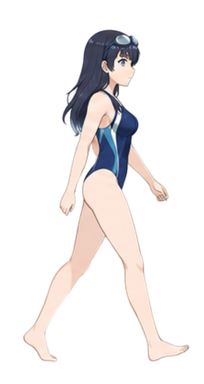
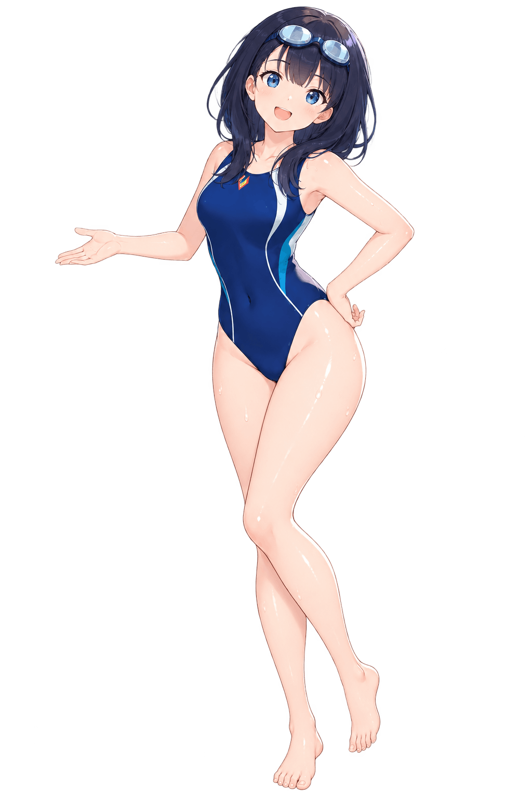
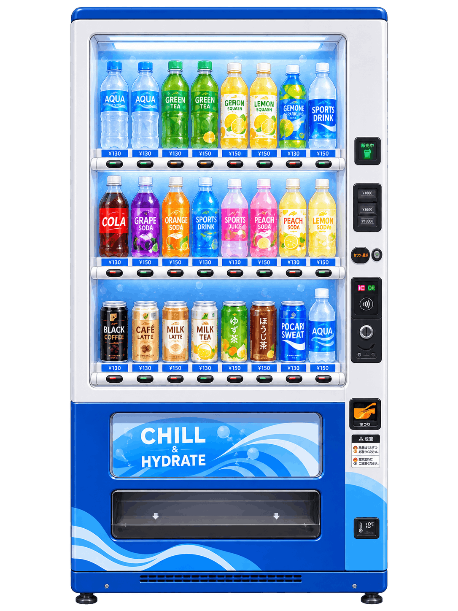

Completed the first lap. Remembered how to center a div.
Chapter 012:17 PM · Jakarta
Annetta
Software developer building web applications, AI-powered tools, and playful interactive websites.
Today’s plan was simple: swim a few laps and go home.

2:24 PM · POOLSIDE
01 / About
Hi, I’m Annetta.
I make software feel alive.
I’m a 20-year-old software developer and IT student based in Jakarta. I build web applications and integrate AI into them, alongside the occasional playful website no one is asking for. I’m happiest moving between interfaces, backend systems, and infrastructure—then polishing the small details that make everything feel human.
I like the space where design and engineering meet: where a clear system can still have warmth, motion, and personality. When I’m not coding, I’m usually exploring a new tool, collecting visual references, or wondering whether a strange idea could become a perfectly reasonable website.
02 / Projects
Take your pick.
Every bottle contains a project: an idea, a problem, and the story of how I tried to solve it. Choose one to see what I’ve been building.
Project menu


Best served with curiosity ↓
03 / Skills
A few lanes
I like to swim in.
I think of skills less like a finished checklist and more like swimming lanes: places to practice, improve, and discover how much farther there is to go. I like moving between product thinking, code, and the systems that bring everything together.
Tried something new. Broke three things. Fixed four.
Stopped to reorganize a folder that was already organized.
Had a good idea halfway across the pool. Almost remembered it.
That’s enough laps for today.
Time to dry off and—…I forgot to bring my towel.
THE WATER'S LOVELY
COME SWIM
WITH ME
Let's make waves togetherHave a project in mind, an unusual idea worth exploring, or simply want to say hello? There’s room in the pool. Bring your curiosity—I’ll bring the goggles.
Jump in ↗No perfect idea required · Towels strongly recommended